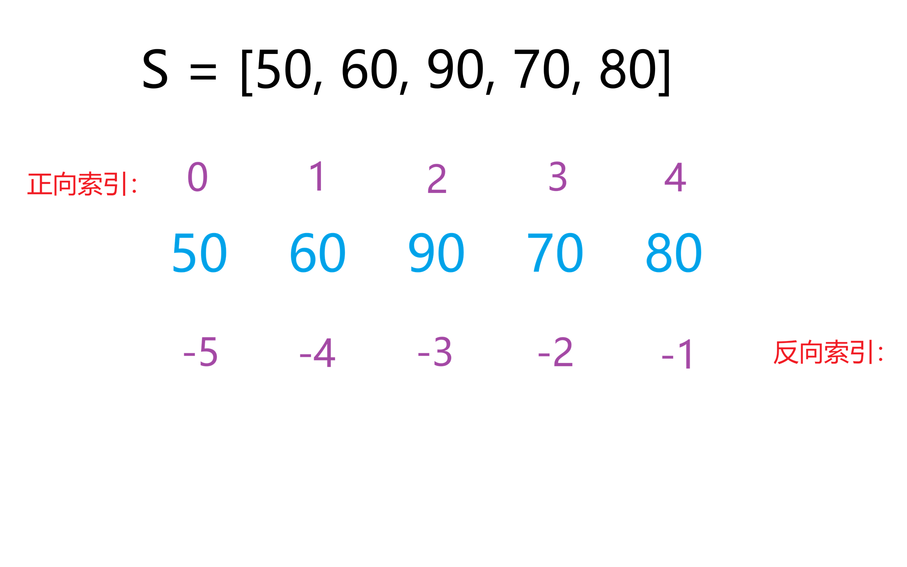
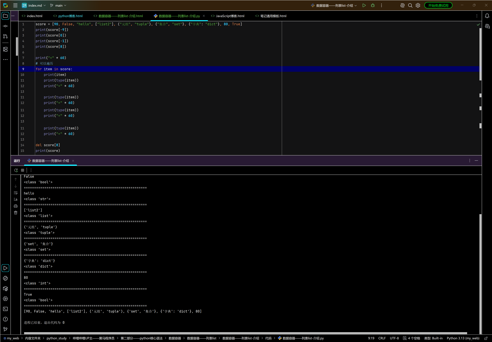

列表list——介绍
课堂笔记
- 列表是数据容器中的一类，是支持一次性存储多个数据(元素)
- 定义(语法)：
列表名称 = [元素1, 元素2, 元素3, 元素4, 元素5...] - 具体示例：
score = [90, 100, 100, 90, 100, 80] -
特点
- 可以存储不同类型的元素——包容已知所有数据类型(
str、int、float、bool、None、list、dict、set、tuple...) - 元素可重复，可更改，有序
- 可重复：可以存储相同的元素
- 可更改：可以通过方法，更改对应的元素
- 有序(理解为有索引[也叫下标]概念)：意味者可以通过索引找到对应的值，顺序与存储的先后顺序一致，通常与方法配合执行(增、删、改、查操作)
- 正向索引从左到右，依次自增，从(
0)开始 - 反向索引从右到左，依次自减，从(
-1)开始 -

- 重点：容器中的元素按特定顺序排列的，可通过索引访问的容器类型称之为序列
- 注意：从前向后(正向索引)，下标从
0开始，从后往前(反向索引)，下表从-1开始 - 如果指定的索引值超出范围，将会报错
- 访问元素办法：
列表名[下标] - 修改元素办法：
列表名[下标] = 新值 - 删除元素办法：
del 列表名[下标]注意空格 - 增加列表元素
-
遍历列表
·score = [90, False, "hello", ["list2"], ("元组", "tuple"), {"集合", "set"}, {"字典": "dict"}, 80, True]
·for item in score:
print(item)
- 可以存储不同类型的元素——包容已知所有数据类型(